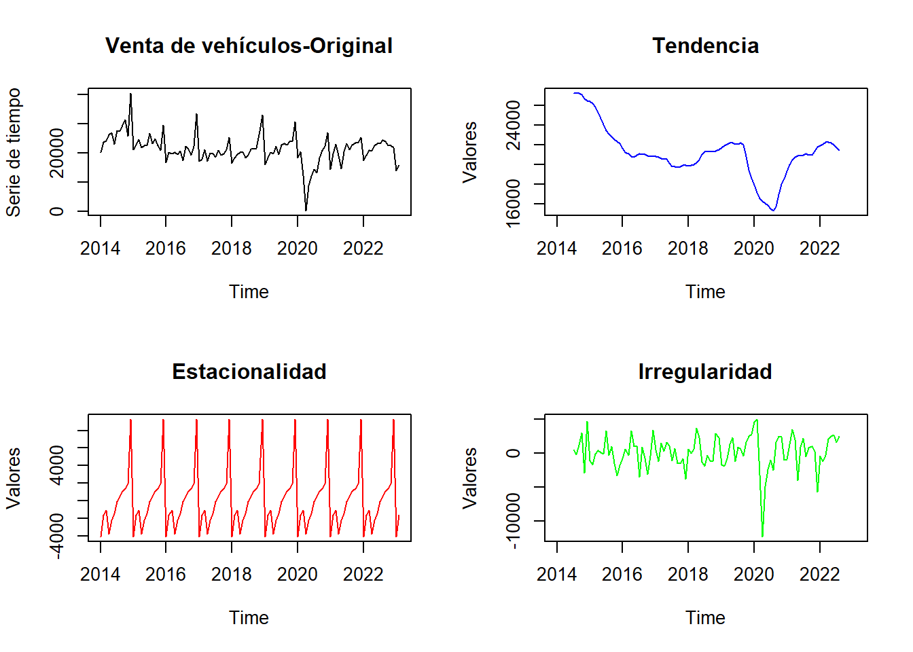

Chapter 4 Extracción de señales
La extracción de señales en series de tiempo es el proceso de identificar patrones, tendencias y características importantes en los datos de la serie temporal. Es una técnica común utilizada en análisis de series de tiempo para modelar el comportamiento de la serie, predecir valores futuros y entender las relaciones entre las variables.
La extracción de señales incluye el análisis de tendencias, el análisis de ciclos, el análisis de estacionalidad, la identificación de puntos atípicos y la descomposición de series de tiempo.
El objetivo de la extracción de señales es resumir la información en la serie de tiempo de una manera significativa y comprensible, lo que permite a los analistas y tomadores de decisiones identificar patrones y tendencias a largo plazo, así como patrones a corto plazo en los datos. La extracción de señales también puede ser útil para identificar la relación entre las variables de una serie de tiempo y cómo están cambiando a lo largo del tiempo.
En resumen, la extracción de señales en series de tiempo es un proceso crítico para comprender el comportamiento de los datos a lo largo del tiempo y proporciona información valiosa para la toma de decisiones y la predicción de eventos futuros.
4.1 Descomposición de las series
Es importante descomponer las series de tiempo porque permite identificar los diferentes componentes que la conforman, es decir, la tendencia, la estacionalidad y la variabilidad aleatoria. Cada uno de estos componentes puede proporcionar información valiosa sobre el comportamiento de la serie a lo largo del tiempo y su relación con otros factores.
La tendencia indica que la venta de vehículos refleja un punto de quiebre en marzo 2020 generado por el impacto de la pandemia, luego se evidencia una tendencia positiva de recuperación hasta 2022 y en los primeros dos meses de 2023 se puede observar un ligero cambio de tendencia hacia la desaceleración.
La estacionalidad, por otro lado, refleja patrones repetitivos en la serie a lo largo del tiempo. Se identifica un patron estacional en diciembre (incremento de la venta de vehículos por influencia estacional) y enero de cada año (detrimento estacional).
Por último, el componente irregular, también conocido como ruido, es la parte de la serie que no se puede explicar por la tendencia y la estacionalidad, y puede ser causada por factores impredecibles y/o eventos aleatorios. En este caso,el covid19, un evento sin precedentes e inesperado.
# Utilizamos la función decompose (del paquete cargado previamente "STATS")
library(stats)
veh_decomp <- decompose(veh)
# Graficar los componentes
par(mfrow = c(2, 2)) #Se utiliza para dividir la ventana gráfica en una matriz de 2 filas y 2 columnas
plot(veh_decomp$x, main = "Venta de vehículos-Original", col = "black", ylab = "Serie de tiempo")
plot(veh_decomp$trend, main = "Tendencia", col = "blue", ylab = "Valores")
plot(veh_decomp$seasonal, main = "Estacionalidad", col = "red", ylab = "Valores")
plot(veh_decomp$random, main = "Irregularidad", col = "green", ylab = "Valores")